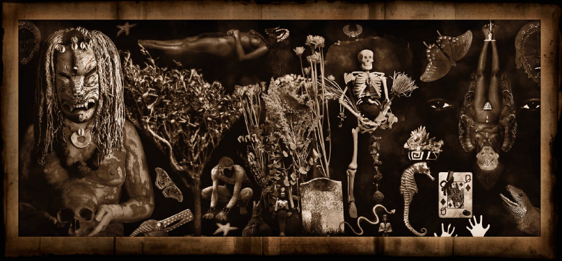

My photographs are a product of found objects, moments in time an imagination developed from life experiences and research into African and African-American folklore and spirituality.
- Gene Young
More about Gene Young

"His images, some documentary in technique, most of the carefully staged, create their own code of communication and system of mythology. The view is challenged to look and look again to deciper the messages."
Esther Iverem, Washington Post
Curriculum Vitae

Portfolio 2
Sed ut perspiciatis unde omnis iste natus error sit voluptatem accusantium doloremque laudantium, totam rem aperiam, eaque ipsa quae ab illo inventore veritatis et quasi architecto beatae vitae dicta sunt explicabo. Nemo enim ipsam voluptatem quia voluptas sit aspernatur aut odit aut fugit, sed quia consequuntur magni dolores eos qui ratione voluptatem sequi nesciunt.

Portfolio 1
Sed ut perspiciatis unde omnis iste natus error sit voluptatem accusantium doloremque laudantium, totam rem aperiam, eaque ipsa quae ab illo inventore veritatis et quasi architecto beatae vitae dicta sunt explicabo. Nemo enim ipsam voluptatem quia voluptas sit aspernatur aut odit aut fugit, sed quia consequuntur magni dolores eos qui ratione voluptatem sequi nesciunt.